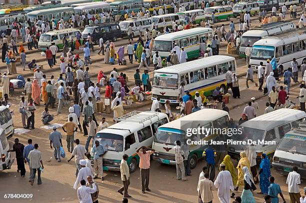

مرحباً (mrhbaan!), Selamat Pagi Pak Agus, Pak Kris, Pak Arya, Bu Arni dan Bu Yustin!
Pada kesempatan kali ini, saya, Sabrina Pinkan Rephauly Lumbuun dari kelas IX-3/30 ingin mempresentasikan hasil Web IL Kolaborasi IPS-PPKN-TIK. Di Web ini berisi mengenai penjelasan Kerja Sama Bilateral, Regional, Multilateral antara Indonesia dan Sudan, serta penjelasan mengenai salah satu tujuan SDGs!
Selamat membaca dan Tuhan memberkati!